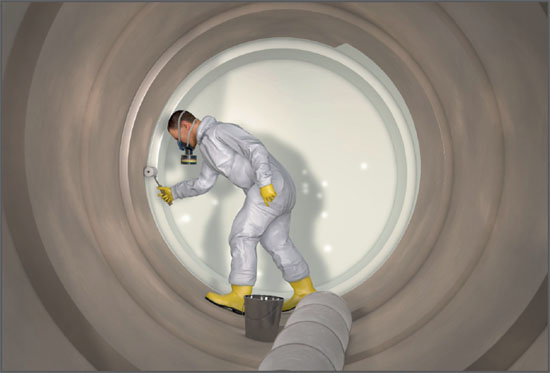
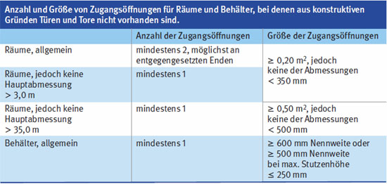
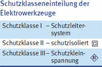

Oberflächenbehandlung in Behältern, Silos und engen Räumen

Gefährdungen
Folgende Räume können im Allgemeinen nicht ausreichend auf natürliche Weise be- und entlüftet werden:
Behälter (Tanks, Apparate, Kessel)
Kastenträger von Brücken oder Kranen
fensterlose Bauwerke
Silos und Bunker
Auffangräume
Hohlräume in Bauwerken und Maschinen
Schächte
Gruben
Kanäle
Rohrleitungen
Abwasserbehandlungsanlagen
Räume unter Erdgleiche
Schiffsräume
Es besteht Gefährdung durch Sauerstoffmangel, Einatmen von Gefahrstoffen und durch die Bildung einer explosionsfähigen Atmosphäre.
Rettungsmaßnahmen können durch enge Zugangsöffnungen erschwert sein.
Allgemeines
Vor Beginn der Arbeiten in Behältern, Silos und engen Räumen ist vom Unternehmer/Betreiber ein Erlaubnisschein auszustellen, in dem die erforderlichen Schutzmaßnahmen festgelegt sind.

Schutzmaßnahmen
Beim Umgang mit Gefahrstoffen ist auf Folgendes zu achten:
Zur Vermeidung explosionsfähiger Atmosphäre und von Sauerstoffmangel (unter dem natürlichen Luftsauerstoffgehalt von 20,9 Vol.-%) Arbeiten nur bei ausreichend technischer Lüftung durchführen. Ist dies nicht möglich, sind Maßnahmen zu ergreifen (z. B. Be- und Entlüftung, Atemschutz mit Isoliergeräten).
Nicht mit Sauerstoff belüften.
Bei Vorhandensein von Gefahrstoffen darauf achten, dass die Arbeitsplatzgrenzwerte sowie Explosionsgrenzen unterschritten werden, kontinuierliche Konzentrationsmessungen notwendig.
An die Gefährdung angepassten Atemschutz einsetzen (z. B. ABEK-Filter, Isoliergeräte).
Darauf achten, dass genügend große Zugangs- oder Einstiegsöffnungen vorhanden sind, um im Gefahrfall den Raum jederzeit schnell verlassen und Verunglückte retten zu können (s. Tabelle).
Fluchtwege freihalten.
Sofern der Raum nicht schnell und ungehindert durch Türen verlassen werden kann, zuverlässigen Sicherheitsposten benennen, der mit den Beschäftigten in Kontakt steht (Sichtverbindung, Sprechverbindung, Signalleine) und der jederzeit, ohne seinen Posten zu verlassen, Hilfe herbeiholen kann.
Bei Unwirksamwerden der Lüftung Arbeiten sofort einstellen und Raum verlassen.
Sofern ein Be- und Entlüften nicht möglich ist, nur Atemschutz-Isoliergeräte benutzen.
Auch nach Fertigstellung der Arbeiten Lüftung so lange fortsetzen, bis keine Explosions- und Gesundheitsgefahren mehr vorhanden sind.
Keine Gefahrstoffe lagern. Nur die zum ungehinderten Fortgang der Arbeiten erforderlichen Mengen bereithalten.
Reinigungsarbeiten mit Lösemitteln an Geräten und Werkzeugen außerhalb der gefährdeten Räume und Behälter durchführen.
Gleichzeitig mit Beschichtungs-, Klebe- und Reinigungsarbeiten keine anderen Arbeiten durchführen.
Zuverlässigen Aufsichtführenden benennen. Dieser muss die auftretenden Gefahren kennen und hat die Einhaltung der Sicherheitsmaßnahmen zu überwachen.
Nur zuverlässige Mitarbeiter auswählen und diese über die besonderen Gefahren und entsprechenden Schutz- und Rettungsmaßnahmen unterweisen.
Zusätzliche Hinweise zu elektrischer Gefährdung
In Räumen/Bereichen mit leitfähiger Umgebung ortsveränderliche elektrische Betriebsmittel nur mit der Schutzmaßnahme
Schutzkleinspannung oder
Schutztrennung (nur einen Verbraucher anschließen) oder
Schutz durch Abschalten durch Fehlerstromschutzeinrichtung (RCD) mit IΔN ≤ 30 mA betreiben.
Ortsveränderliche Stromquellen, Trenntrafos und Baustromverteiler grundsätzlich außerhalb des Raumes/Bereiches mit leitfähiger Umgebung aufstellen.
In Räumen/Bereichen mit leitfähiger Umgebung und zusätzlich begrenzter Bewegungsfreiheit ortsveränderliche elektrische Betriebsmittel nur mit Schutzmaßnahme
Schutztrennung (nur einen Verbraucher anschließen)
Schutzkleinspannung (nur Betriebsmittel der Schutzklasse III anschließen) betreiben.

Arbeitsmedizinische Vorsorge
Arbeitsmedizinische Vorsorge nach Ergebnis der Gefährdungsbeurteilung veranlassen (Pflichtvorsorge) oder anbieten (Angebotsvorsorge). Hierzu Beratung durch den Betriebsarzt.